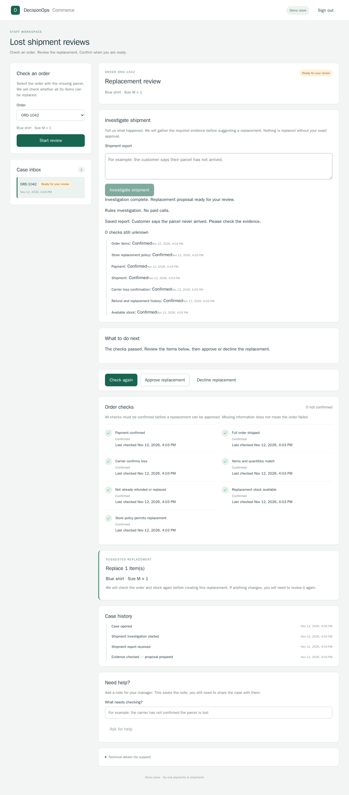
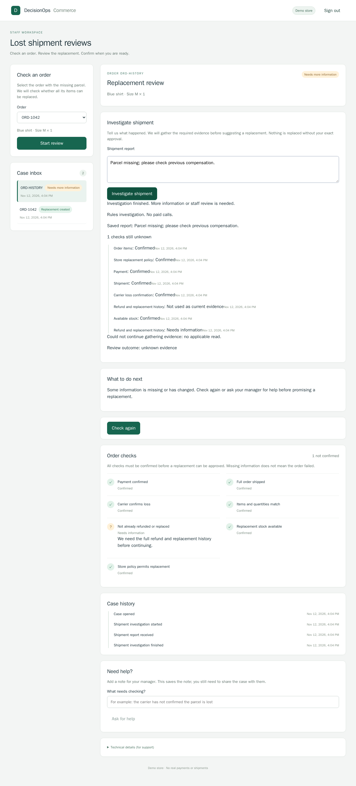

DecisionOps Commerce · local portfolio walkthrough
Investigate a shipment. Inspect the evidence. Keep approval human.
This is a fictional store. The interactive application uses rules, not a live AI model. No real payments, shipments or paid API calls occur when you use it.
This public walkthrough is read-only: it has no investigation API or reset control. Interactive sessions are invitation-only. Ask Richard privately for the demo URL and credentials; none are published here. The interactive login page alone grants no business permissions.
Invited visitors share fictional records; a completed replacement changes that demo until an operator deliberately resets it. Public walkthrough assets remain available independently.
1. Eligible shipment: ORD-1042
Select the order and Start review. That existing button runs the bundled check. On the case, enter “Customer reports a missing parcel; check the evidence” and click Investigate shipment for the adaptive read workflow. The report itself proves nothing.
Watch seven evidence reads, including available inventory. Refresh and sign back in: progress remains in PostgreSQL. A complete, current assessment produces a replacement proposal.
Approve replacement → Confirm approval binds that exact proposal. Create replacement → Confirm replacement is a separate human action. Execution rechecks records and atomically creates one fictional replacement and stock reservation. A model has neither authority.
See the verified rules proposal

2. Incomplete evidence: ORD-HISTORY
Investigate the missing parcel. Compensation history is incomplete, so previous compensation remains unknown. Staff review is required; no proposal or replacement is created. Unknown is not false.
See the incomplete case

3. Three different kinds of evidence
- Rules: the interactive demo above. Browser/API/workers were exercised locally, including a worker restart after the first committed read. The run resumed to seven reads, one proposal and one explicitly confirmed fictional replacement.
- Mocked Decisions: separate tests inject simulated SDK HTTP replies. A mock's missing-evidence review can trigger a separately recorded deterministic read while budget and valid evidence permit it. That continuation is application behavior, not the model's choice. Prior mock integration screenshot.
- Real Decisions: a preserved, manually authorized historical call sequence to POST /v1/decisions, model gpt-6-luna. Seven choices gathered six conditions, then selected review while inventory was still available. Stock stayed unknown; no proposal or replacement was created. This was a safe early-review result, not successful task completion.

The real run recorded 3,628 input tokens, zero output/reasoning tokens and a usage-based estimate of $0.00036280 at its approved historical rate. Its durable wall time was 12.766442s. These are recorded integration results, not an invoice audit or evidence of general model quality.
Read the sanitized historical outcome summary · Evidence SHA-256 identities. Raw traces are preserved outside the active checkout and are not served here; opening this summary never calls a provider. Historical nano review and stopped cached-pilot monitor failure also remain preserved in the repository archive.
4. Separate read-only browser investigation
A second path navigates two fictional clothing storefronts. It receives a goal and starting URL, then uses rendered controls and cited page evidence. It does not drive this staff console, and its page claims cannot authorise a proposal or replacement.
The frozen six-case scripted checks cover current evidence, stale or absent evidence, a wrong-order parcel and a failed page. A separate actual SDK-to-browser test uses mocked responses: one action is applied, its new page is observed, then the next request is made. This proves offline integration, not autonomous transfer.
Read the offline integration summary.
The first real Responses browser call returned three action messages instead of one. The controller rejected all three before applying any action: A1 failed validation, and the other five cases were unexecuted. One request used 1,931 input and 388 output tokens; its usage-based estimate including cache writes was $0.0004353. This is a preserved failure, not successful live navigation. At that point the corrected single-call function protocol had been tested offline only; a new live run requires separate spending approval.
Read the preserved live-failure summary.
A second authorized live run used one function call per decision and actually followed the order link, then the tracking link on Site A. Its finish was rejected because a whole-record timestamp quote could not be parsed by the old validator. A1 remains a failed finish; the other five cases were unexecuted. The displayed timestamp was two hours before the frozen assessment time, not stale. Three calls used 7,614 input and 558 output tokens (estimated $0.00122085 including cache writes).
The citation contract allowed source-bound record quotes. A focused offline replay now accepts that same saved response only when the bound record has one unambiguous quoted timestamp; stale, ambiguous and wrong-record evidence still fails. This is an offline correction, not a retroactively successful live run. Live task completion and navigation across both sites still need a newly authorized evaluation.
Limits
No real-shop connector, live model in the browser, production identity system or public deployment has been demonstrated. A shared demo is not private per visitor. Stale evidence and previously compensated items can legitimately stop another attempt. Ask the operator for a fresh demo window; never reset evidence or approve an outdated proposal to force an outcome.